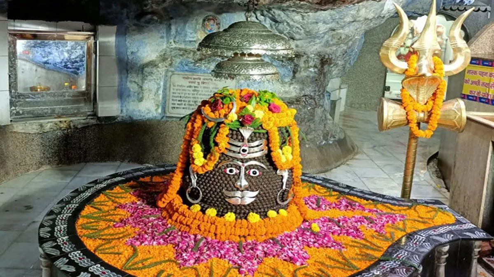
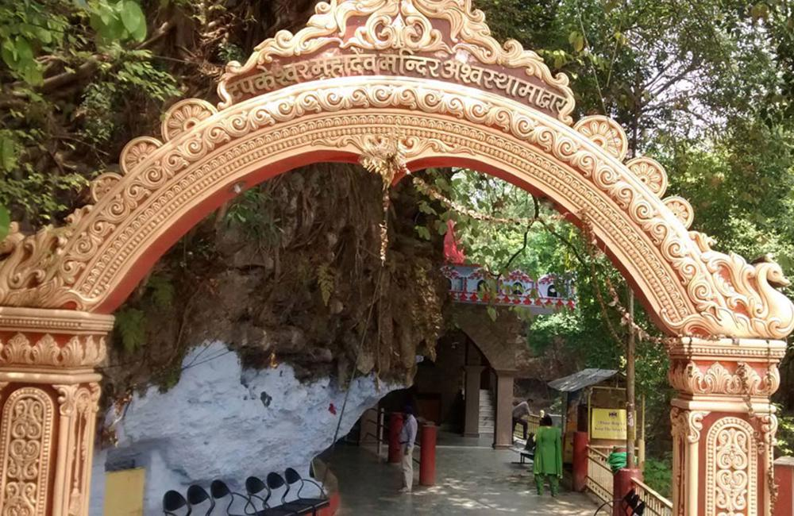
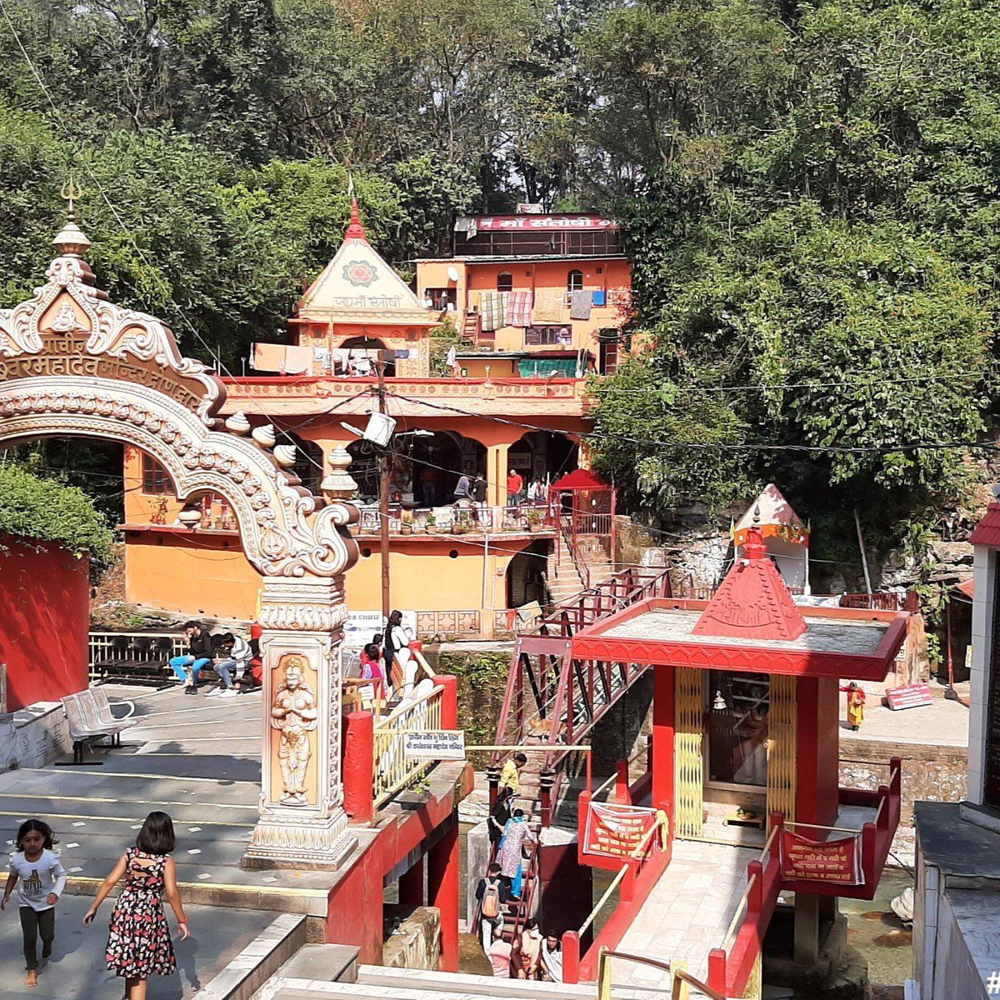
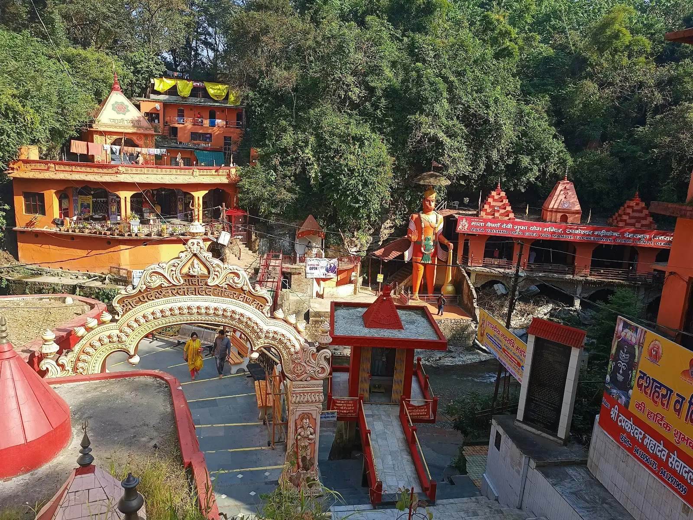
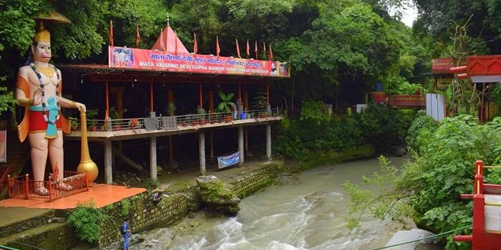

Tapkeshwar Temple (also known as Tapkeshwar Mahadev) is one of the most ancient and revered Shiva temples in Dehradun, nestled inside a natural cave on the banks of the Tons River. The name "Tapkeshwar" comes from the constant dripping ("tapakna") of water from the cave roof onto the Shivling, which is believed to be a divine manifestation of Lord Shiva himself. This continuous natural abhishek (ritual bathing) makes the temple unique and spiritually powerful — devotees consider the dripping water as holy and believe it fulfills wishes and grants blessings.
Surrounded by lush greenery, rocky cliffs, and the soothing sound of flowing water, the temple offers a peaceful and mystical atmosphere. Inside the cave, you’ll find the naturally formed Shivling, small shrines of Lord Ganesha (with a famous idol where milk is said to have miraculously flowed during the Samudra Manthan legend), and other deities. The temple complex also has a small pond, peacocks roaming freely, and a serene riverside setting — making it a perfect spot for meditation, photography, and spiritual connection in the Doon Valley.
Early morning for peaceful darshan and fewer crowds, or during Sawan (July–August) and Maha Shivratri when the temple is beautifully decorated and crowded with devotees.
Natural cave temple with continuous dripping water on Shivling, ancient Ganesha idol, serene riverside location, peacocks, small pond, and strong spiritual energy.
Wear comfortable shoes (cave floor can be slippery), offer milk/bilva leaves to Shivling, carry water and snacks, arrive early to avoid queues, and respect the cave’s silence.
"Tapkeshwar Temple is where the eternal drip of divine nectar meets the heart of Shiva — a living miracle of nature and faith hidden in the serene embrace of Dehradun’s hills."